Software Engineering Individual Assignment: Contact Atlas (Bookmarks / Multiple Contact Methods / Excel Import & Export)
Assignment Description
| Item | Details |
|---|---|
| Course | Software Engineering (FZU-MU) |
| Assignment | CSDN course community "Programming Assignment — Address Book" (link in the course notice) |
| Team / Individual | Individual project |
| Student | Liao Weibin / 832402110 |
| Objective | Build a usable address-book web application with bookmarks, multiple contact methods per person, Excel import/export, cloud deployment, a complete blog, and a demo video |
| Repository | https://github.com/kaaJ4K/contact-book |
| Live application | https://kaaj4k.github.io/contact-book/ |
| Live blog | https://kaaj4k.github.io/contact-book/blog/ |
| References | MDN Web Docs, React documentation, SheetJS / xlsx-js-style, Google HTML/CSS/JS Style Guide, Airbnb JavaScript Style Guide |
Table of Contents
- Project Links and Quick Start
- Requirements Coverage
- Git Workflow and Commit History
- Implementation Notes
- Application Screenshots
- Demo Video
- Cloud Deployment
- Division of Labor and Contribution
- Difficulties, Attempts, and Lessons Learned
- PSP Table
- Self-Check Against the Grading Rubric
- Pre-Submission Checklist
1. Project Links and Quick Start
| Item | Link |
|---|---|
| GitHub repository | https://github.com/kaaJ4K/contact-book |
| Live application (GitHub Pages) | https://kaaj4k.github.io/contact-book/ |
| Live blog | https://kaaj4k.github.io/contact-book/blog/ |
| Code standard | https://github.com/kaaJ4K/contact-book/blob/main/codestyle.md |
| Pull request (feature branch → main) | https://github.com/kaaJ4K/contact-book/pull/1 |
| Release v1.0.0 | https://github.com/kaaJ4K/contact-book/releases/tag/v1.0.0 |
| Demo video | https://github.com/kaaJ4K/contact-book/blob/main/docs/demo.mp4 |
| Import / export samples | import-demo.xlsx / export-demo.xlsx |
Run locally:
git clone https://github.com/kaaJ4K/contact-book.git
cd contact-book
npm install
npm run build
npm run preview # http://127.0.0.1:4173
npm test # 16 unit tests
Tech stack: React 18, hand-written CSS, and esbuild. Excel reading and writing are handled by xlsx-js-style. Data is stored in browser localStorage, and the application is built as a static site with no backend dependency.
2. Requirements Coverage
| Assignment requirement | Points | Implementation | Evidence |
|---|---|---|---|
| Bookmark contacts | 25 | One-click star/unstar, favorites filter, favorite-first sorting, immediate persistence | Screenshots 1–2; ContactCard.jsx, contacts.js |
| Multiple contact methods | 10 | Unlimited phone, email, WeChat, QQ, address, and custom-platform entries; edit, delete, copy | Screenshots 3–4; ContactEditor.jsx, ContactDetail.jsx |
| Excel export | 25 (combined with import) | One row per contact, 16 columns, favorites-only export, styled worksheet with filters | Screenshot 7; excel.js; docs/samples/export-demo.xlsx |
| Excel import | Same as above | Template download, drag-and-drop upload, header aliases, preview, row-level validation, merge/skip modes, result summary | Screenshots 5–6; ImportDialog.jsx |
| Page style | 10 | Warm-paper and deep-forest visual system; responsive layout; keyboard access and reduced-motion support | Screenshots 1–10 |
| Cloud deployment (optional) | +15 | Public GitHub Pages deployment, not localhost | https://kaaj4k.github.io/contact-book/ |
| Additional capabilities | — | Global search, tag filters, three sort modes, delete undo, keyboard shortcuts, mobile floating button, auto-save status | Described below |
Feature Summary
- Bookmarks: a star button on every card; a dedicated "Favorites" view in the sidebar; favorites are pinned to the top of every list; state is persisted immediately.
- Multiple methods: each contact can hold an unlimited number of phone, email, WeChat, QQ, address, and custom "other" entries. Custom entries can carry a platform name such as GitHub or Xiaohongshu. Every entry can be copied from the detail drawer.
- Excel export: 16 columns, one row per contact. Extra phone numbers and emails are folded into the last slot of their type and separated by
/; importing the file restores them as separate entries, so no data is lost. A favorites-only export is also available. - Excel import:
.xlsx/.xlsm, up to 8 MB and 2,000 rows; recognizes Chinese and English headers; requires a name; reports invalid emails, short phone numbers, and missing names by row number; supports "merge" and "skip duplicates" strategies. - Experience details: search across names, companies, titles, tags, notes, and every contact method; tag filtering; birthday field; undo for eight seconds after deletion; 12 sample contacts on first launch; one-click reset.
3. Git Workflow and Commit History
This is an individual project, so there was no teammate collaboration. The repository was created from scratch, and development followed a feature-branch and pull-request workflow to keep the history readable and traceable.
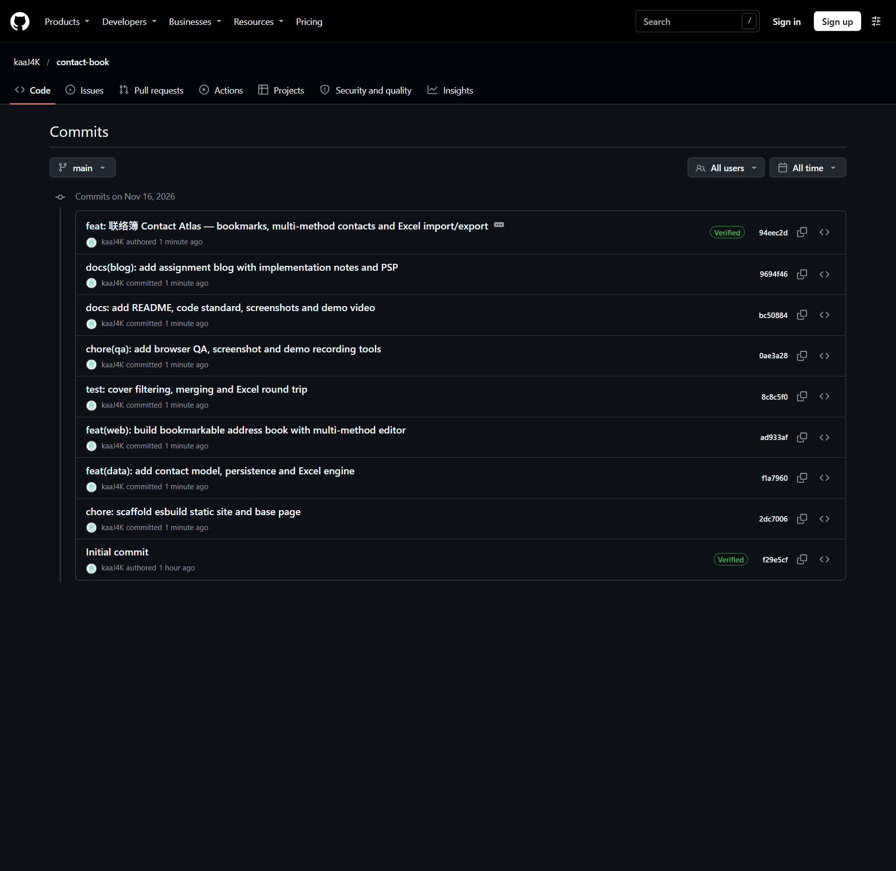
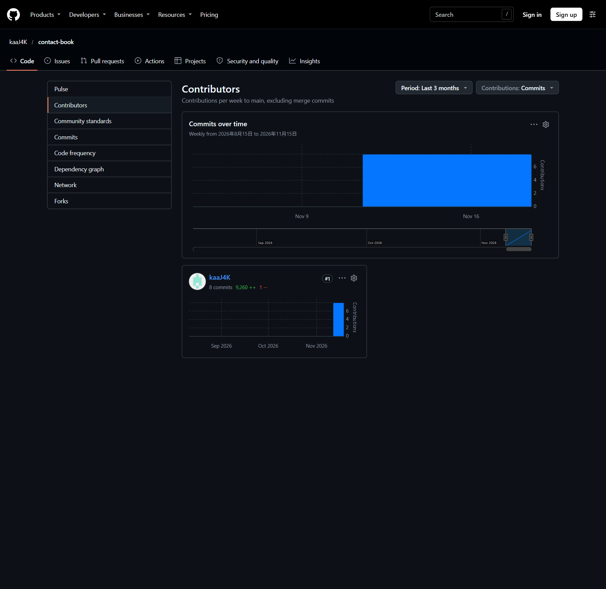
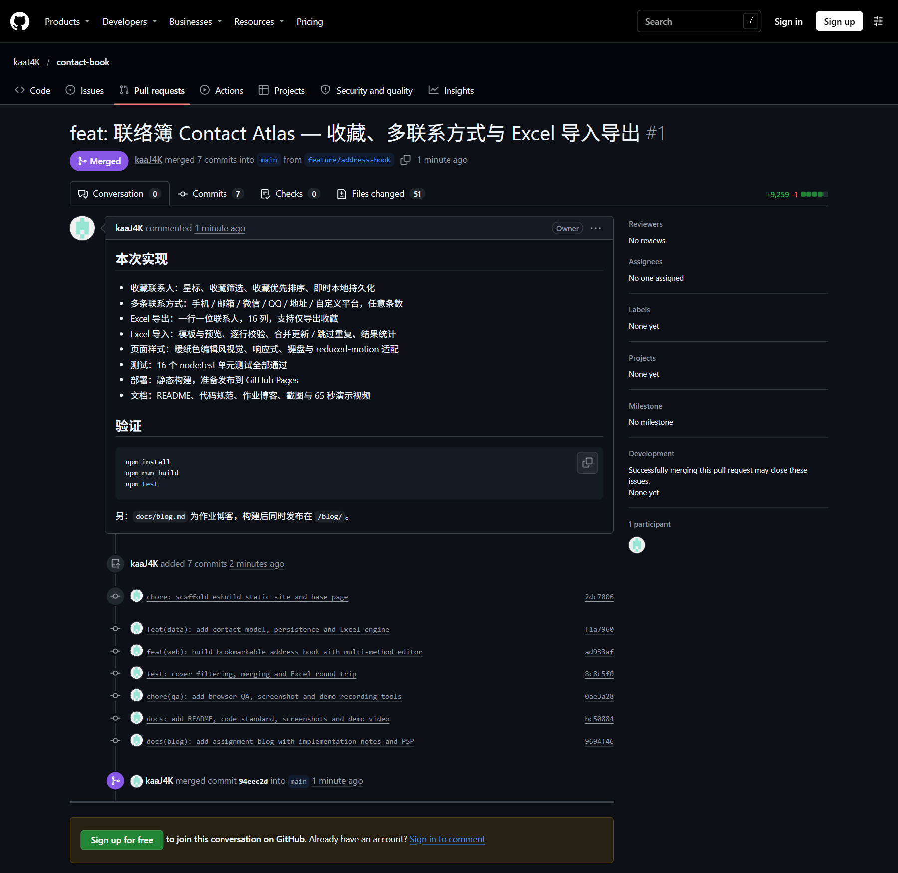
Commit statistics at the time the screenshots were captured: 9 commits on main (including one merge commit); the GitHub Contributors page reported kaaJ4K — 8 commits because GitHub excludes merge commits from contribution counts. The repository has one contributor. New documentation commits added after the screenshots are visible on the repository's Commits page.
Main commits:
chore: scaffold esbuild static site and base page
feat(data): add contact model, persistence and Excel engine
feat(web): build bookmarkable address book with multi-method editor
test: cover filtering, merging and Excel round trip
chore(qa): add browser QA, screenshot and demo recording tools
docs: add README, code standard, screenshots and demo video
docs(blog): add assignment blog with implementation notes and PSP
feat: Contact Atlas — bookmarks, multi-method contacts and Excel import/export # PR merge
- Branch strategy:
feature/address-book→ Pull Request → merge intomain. - Versioning:
v1.0.0release with live app and demo-video links in the release notes. - Commit convention:
type(scope): summary, documented in codestyle.md.
If the course requires students to fork a teacher-provided template repository, the template can be forked and these commits can be mirrored into it. This project was implemented from scratch because no starter repository was provided.
4. Implementation Notes
4.1 Architecture
┌──────────────────────────────────────────────────────────┐
│ React single-page app │
│ App.jsx: filters / sorting / modal state / data actions │
│ components: sidebar, contact card, detail drawer, │
│ editor, import/export dialogs │
├──────────────────────────────────────────────────────────┤
│ lib/contacts.js data model, validation, search, merge │
│ lib/excel.js header mapping, parsing, workbook │
│ lib/storage.js localStorage access and reset │
│ data/seed.js 12 sample contacts │
├──────────────────────────────────────────────────────────┤
│ localStorage (single source of truth, no backend) │
└──────────────────────────────────────────────────────────┘
The code deliberately separates pure data functions from the UI. Filtering, sorting, merging, validation, and Excel conversion can all be tested in Node without a browser. React components only render state and bind events. This makes the behavior predictable and allows the storage layer to be replaced later without touching the UI.
4.2 Data Model
contact = {
id, name, company, title, birthday, tags: [], favorite, note,
methods: [
{ id, type: 'phone' | 'email' | 'wechat' | 'qq' | 'address' | 'other', label, value }
],
createdAt, updatedAt,
}
A contact owns an array of methods instead of fixed phone1 / phone2 / email1 fields. This decision has three benefits:
- The UI can add any type and any number of methods.
- The Excel exporter maps the array to a fixed column template, folding excess values into the last slot of each type.
- Import merging can replace the method array without touching
favorite,createdAt, or other local state.
4.3 Bookmarks
- The star button toggles
favoriteand updatesupdatedAt. filterAndSort()always appliesNumber(b.favorite) - Number(a.favorite)so favorites are pinned to the top in both the "All" and "Favorites" views.- The sidebar and the toolbar share the same
scopestate, so there is no duplicated filter state. - An
Appeffect callssaveBook()after every state change, so there is no manual Save button.
4.4 Multiple Contact Methods
- The editor renders dynamic method rows. Each row has a type selector, a value input, and a delete button.
- Choosing "Other" reveals a platform-name input for GitHub, Xiaohongshu, portfolios, and similar accounts.
- Validation rules: a name is required; email addresses must match a basic pattern; phone numbers need at least five digits; duplicates of the same type and value are rejected.
- The detail drawer color-codes method types and supports copy-to-clipboard for each entry.
4.5 Excel Export Design
The export uses 16 fixed columns:
Name | Company | Title | Birthday | Tags | Favorite | Phone1 | Phone2 | Phone3 | Email1 | Email2 | WeChat | QQ | Address | Other | Notes
Key rules:
- One row per contact; one column per information type.
- If a contact has more than three phone numbers, the third slot becomes
p3 / p4 / p5. The same idea applies to more than two emails. Import splits these values back into separate methods. - The "Other" column uses
Platform: accountformat; multiple entries are separated by newlines. - Strings beginning with
=,+,-, or@are prefixed with'on export to prevent formula injection. The prefix is removed on import. - The workbook includes a styled header, bold text, column widths, alternating row fills, and auto-filter.
- A "favorites only" mode produces a compact backup of frequently used contacts.
4.6 Excel Import Flow
Choose or drop a file
↓
Validate extension, size, and row count
↓
Parse the workbook → find the header within the first 10 rows → map aliases
↓
Parse each row: name, tags, favorite, phones, emails, WeChat, QQ, address, other
↓
Collect row-level errors without stopping valid rows → preview and statistics
↓
Choose "Merge updates" or "Skip duplicates"
↓
Match by name + phone/email → write once → show created/updated/skipped/warnings
Duplicate detection requires the same name plus at least one shared phone number or email address. If neither side has a phone or email, the name alone is used. This avoids merging two different people who happen to share a name. Merge mode preserves the existing favorite flag and creation time and unions the tags; skip mode leaves existing contacts untouched.
4.7 Visual Design and Responsiveness
- Concept: an editorial "paper card file" for contacts. Deep forest-green sidebar, warm paper background, and coral bookmark highlights.
- Typography: serif display faces for headings and a clean sans-serif for body text.
- Design tokens define colors, spacing, radii, and shadows. Cards lift slightly on hover; dialogs and drawers use restrained transitions.
- Responsive behavior: fixed sidebar above 980 px; off-canvas sidebar below 980 px; single-column cards below 760 px; horizontally scrollable filter row; bottom-aligned dialogs on mobile.
- Accessibility: icon-only buttons have
aria-label; dialogs userole="dialog"andaria-modal; Escape closes the topmost layer;:focus-visibledraws a visible ring; all animations are disabled underprefers-reduced-motion.
4.8 Testing and Quality
npm test uses Node's built-in node:test runner. All 16 tests pass:
- Contact normalization, required-field validation, and duplicate-method validation.
- Full-text search, tag filtering, and favorite-first sorting.
- Duplicate detection and both merge and skip import modes.
- Excel column structure, folding and restoring multiple phones/emails, and custom platform labels.
- Round-trip parsing of the import template, English header aliases, and headers below title rows.
- Row-level warnings for missing names and invalid emails, a friendly error for a missing name column, and formula-injection escaping.
✔ tests 16
✔ pass 16
✔ fail 0
The browser QA script (tools/capture.mjs) also drives the real application through favorites, create/read/update/delete, import, export, search, and mobile layouts, capturing screenshots and checking console errors.
5. Application Screenshots
| Main view: all contacts | Favorites view |
|---|---|
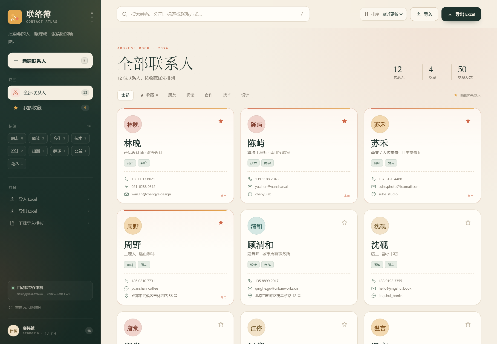 |
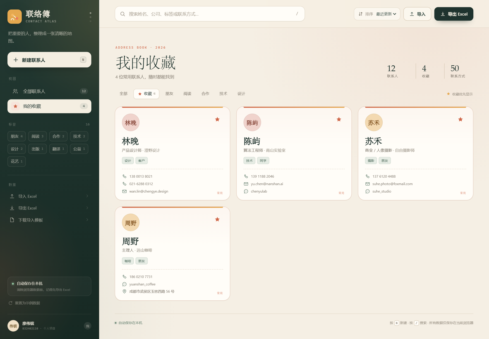 |
| Contact detail with multiple methods | Editor with methods and tags |
|---|---|
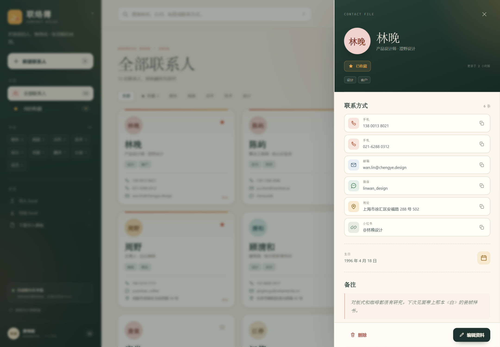 |
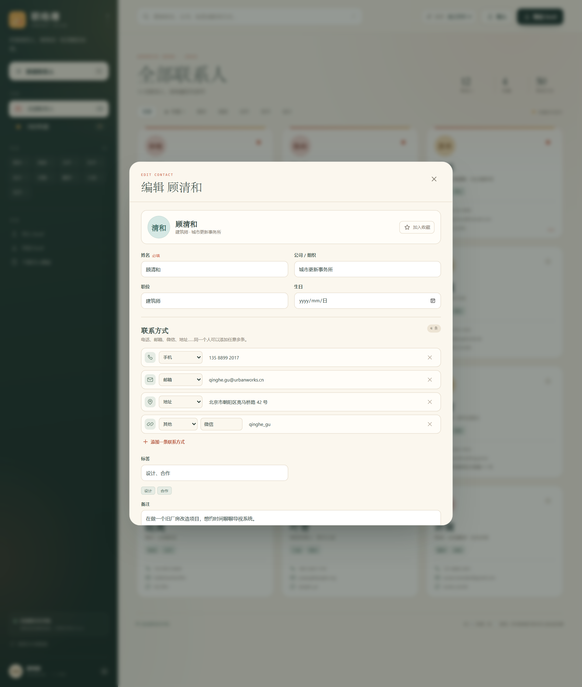 |
| Excel import preview and validation | Import result summary |
|---|---|
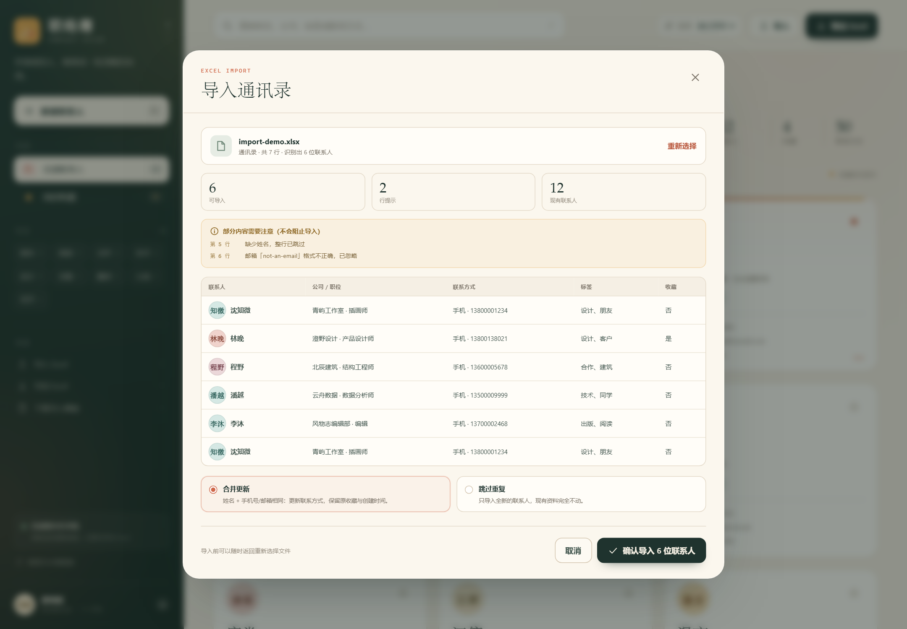 |
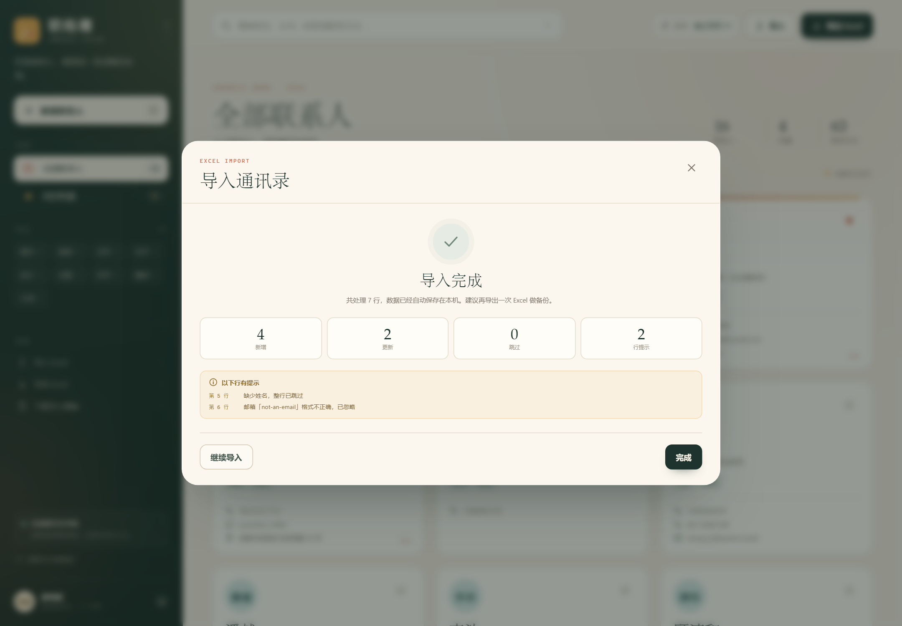 |
| Excel export dialog | Search and filtering |
|---|---|
| Mobile main view | Mobile sidebar |
|---|---|
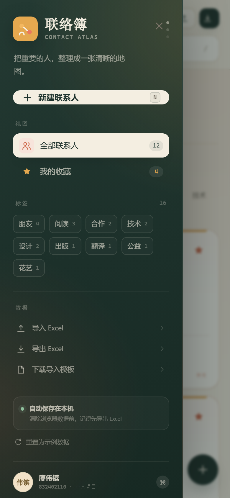 |
The application UI is in Chinese; screenshot captions and this blog are in English. All sample contacts are fictional and used only to demonstrate the features.
6. Demo Video
- Online video: https://kaaj4k.github.io/contact-book/blog/demo.mp4
- Repository file: docs/demo.mp4
- Length / coverage: about 65 seconds. It covers favorites filtering, multiple-method editing, creating a contact, Excel import preview and results, the export dialog, search, and the mobile layout.
- If the course platform requires a direct video upload, use
docs/demo.mp4from the repository or re-upload it to the platform and add that link here.
7. Cloud Deployment
The application is a static single-page site. It is built and deployed to GitHub Pages:
- Run
npm run buildto generatedist/. - Publish the contents of
dist/to the repository'sgh-pagesbranch. - In Settings → Pages, choose "Deploy from a branch" →
gh-pages / (root). - Public URL: https://kaaj4k.github.io/contact-book/.
This is not localhost and does not depend on the developer's computer: any device can open the public URL and use the application. Data is stored in each visitor's browser, and the first visit loads 12 sample contacts.
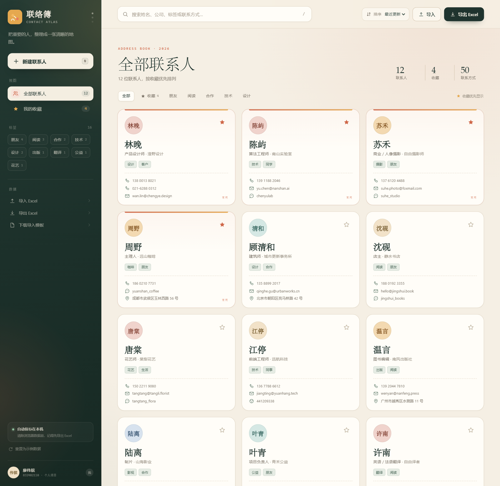
8. Division of Labor and Contribution
This is an individual project with no team members.
| Name | Student ID | Work | Contribution |
|---|---|---|---|
| Liao Weibin | 832402110 | Requirement analysis, UI/UX design, data model, bookmarks, multiple contact methods, Excel import/export, testing, cloud deployment, blog, and demo video | 100% |
| Total | — | — | 100% |
9. Difficulties, Attempts, and Lessons Learned
This was an individual project, so there were no team-coordination difficulties. The sections below record the main technical difficulties, the attempts made, whether they were solved, and the lessons learned.
Difficulty 1: Fixed Excel Columns vs. Unlimited Contact Methods
- Problem: The assignment requires one column per information type, but the application allows an unlimited number of phone numbers and emails. Truncating values would lose data.
- Attempt: A fixed 16-column template plus a "fold and restore" rule. Values beyond the reserved slots are joined into the last slot of their type with a separator; import splits them back into separate entries. A round-trip unit test covers four phone numbers, three emails, multiple addresses, and custom platform labels.
- Solved: Yes. The round-trip is covered by automated tests.
- Lesson: A spreadsheet is a presentation format, not a data model. A clear mapping rule can preserve both readability and completeness.
Difficulty 2: Duplicate Contacts and Invalid Rows in Real Excel Files
- Problem: Real spreadsheets often contain missing names, malformed emails, and duplicate rows. Aborting the whole import on the first error is a poor experience.
- Attempt: A three-step flow: parse → preview → confirm. Row-level errors are collected and shown with sheet row numbers. Two modes are offered: merge updates and skip duplicates. Duplicate detection uses name plus phone/email to avoid merging people with the same name. The result screen shows created, updated, skipped, and warning counts.
- Solved: Yes.
import-demo.xlsxconsistently produces 4 created / 2 updated / 2 warnings, demonstrating the behavior. - Lesson: The hard part of import is not reading a file; it is turning unpredictable external data into a predictable, reviewable operation.
Difficulty 3: Data Reliability in a Local-First Application
- Problem: There is no backend, so data lives only in the browser. Clearing browser data or switching devices could lose contacts.
- Attempt: Every mutation is written to
localStorageimmediately. A persistent auto-save indicator explains where data is stored. The Excel exporter serves as a backup and migration path. Deletion offers an eight-second undo. The first visit loads sample data with a clear reset action. - Solved: Yes. Data can be exported, and destructive actions are reversible.
- Lesson: "Local-first" does not mean "care-free"; backup and recovery must be part of the feature set.
Difficulty 4: Static Deployment, Visual Identity, and Accessibility
- Problem: Static deployment is simple, but the app still needs to work on every screen size and remain visually distinctive. Dialogs, cards, and mobile interactions are easy to let diverge.
- Attempt: Relative asset paths (
base: './') support GitHub Pages sub-paths. Design tokens keep colors and spacing consistent. Screenshots at desktop and 390 px mobile widths validate each breakpoint. Icon-only buttons have accessible names; Escape closes dialogs; reduced-motion preferences are respected. - Solved: Yes. Desktop and mobile layouts were verified with real screenshots.
- Lesson: Visual design is not a final coat of paint; constraints established early make later features cheaper to add.
Difficulty 5: Maintaining Delivery Quality as a Solo Developer
- Problem: Without a teammate reviewing the work, import/export bugs or mobile layout problems could go unnoticed until the end.
- Attempt: Pure data functions and tests came first, then the UI. A Node + CDP browser QA script walks through favorites, CRUD, import, export, and mobile layout automatically. Screenshots and the demo video are generated by scripts as well, reducing manual omissions.
- Solved: Yes.
tools/capture.mjsandtools/record.mjscan regenerate the screenshots and video consistently. - Lesson: Automation is not only for testing; it also produces reliable delivery artifacts.
10. PSP Table
| Phase | Planned (h) | Actual (h) | Actual / Planned | Notes |
|---|---|---|---|---|
| Requirement analysis and task breakdown | 2.0 | 2.0 | 100% | Split bookmarks, multiple methods, Excel, deployment, and blog |
| Tech selection and project setup | 1.0 | 1.0 | 100% | React + esbuild + xlsx-js-style; checked static deployment feasibility |
| Data model and local storage | 2.0 | 2.5 | 125% | One-to-many method model, merge rules, storage fallback |
| Bookmarks and multiple methods | 5.0 | 6.0 | 120% | Cards, detail drawer, editor, validation, interaction polish |
| Excel import and export | 6.0 | 8.0 | 133% | Column mapping, fold/restore, import preview, errors, styling |
| Page style and responsive layout | 3.0 | 3.5 | 117% | Design tokens, motion, mobile layout, accessibility |
| Testing and bug fixing | 2.0 | 2.5 | 125% | 16 unit tests and automated browser QA |
| Cloud deployment and acceptance | 2.0 | 2.0 | 100% | GitHub Pages, screenshots, public URL checks |
| Blog, screenshots, and demo video | 3.0 | 2.5 | 83% | Markdown blog, 10 application screenshots, 65-second video |
| Total | 26.0 | 30.0 | 115% | Main overrun was Excel mapping and import validation |
11. Self-Check Against the Grading Rubric
| Rubric item | Points | Self-check | Evidence |
|---|---|---|---|
| Blog format in Markdown | 10 | ✅ Markdown; repository, deployment, code-standard, PR, and release links included | This blog; codestyle.md |
| Implementation ideas, screenshots, division of labor | 20 | ✅ Architecture, data model, Excel mapping, and testing explained; 10 real screenshots; individual contribution 100% | Sections 4, 5, and 8 |
| Page style | 10 | ✅ Consistent design language, responsive layout, accessibility details | Screenshots 1–10 |
| Bookmark contacts | 25 | ✅ Star toggle, favorites filter, favorite-first sorting, persistence | Screenshots 1–2 |
| Multiple contact methods | 10 | ✅ Unlimited methods across six types, custom platforms, edit/delete/copy | Screenshots 3–4; tests |
| Import and export | 25 | ✅ Complete Excel import/export loop, template, preview, validation, merge/skip | Screenshots 5–7; sample workbooks; tests |
| Web cloud deployment (optional) | +15 | ✅ Public GitHub Pages deployment, not localhost | Live URL; deployment screenshot |
| Base total | 100 | — | — |
| Including optional bonus | 115 | — | — |
12. Pre-Submission Checklist
- GitHub repository created; at least 3 commits; feature branch and pull request completed
- Project builds (
npm install && npm run build) and tests pass (npm test) - Core features: bookmarks, multiple contact methods, Excel import/export
- Page style: desktop and mobile screenshots
- Public deployment on GitHub Pages (not localhost)
- Blog contains assignment description table, table of contents, project links, implementation notes, screenshots, contribution ratio, difficulties, and PSP table
- Demo video recorded and included in the repository / online blog
- Publish this English version on the course-required platform (CSDN or the course site) and submit the link before the deadline
- If the course requires a fork of a template repository, complete the fork and replace the repository link in this blog
Reflection: The most valuable outcome of this assignment was not a specific screen, but learning to translate requirements into a testable data model, then use a repeatable build, test, and screenshot workflow to protect delivery quality. Bookmarks, multiple contact methods, and Excel import/export look like three independent features, but all three depend on how a person is represented. Once the model is clear, the UI and the file format are only projections of it.